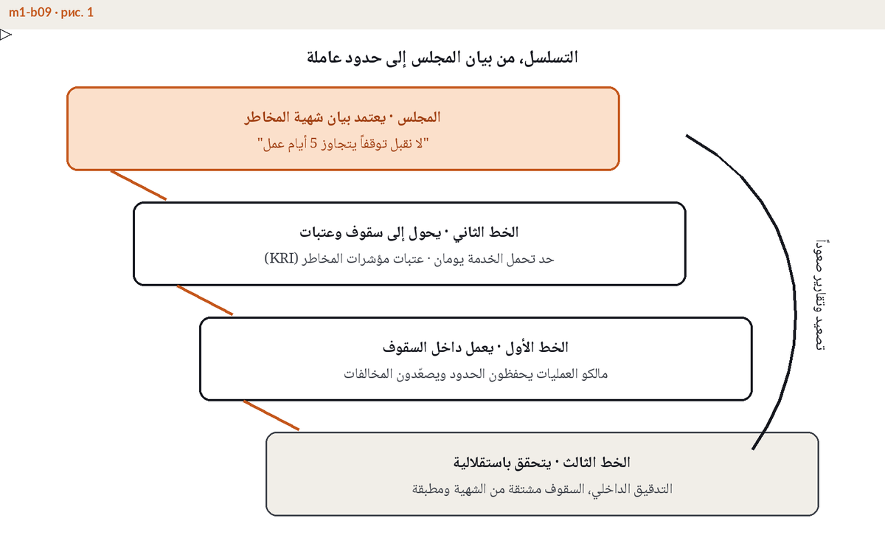
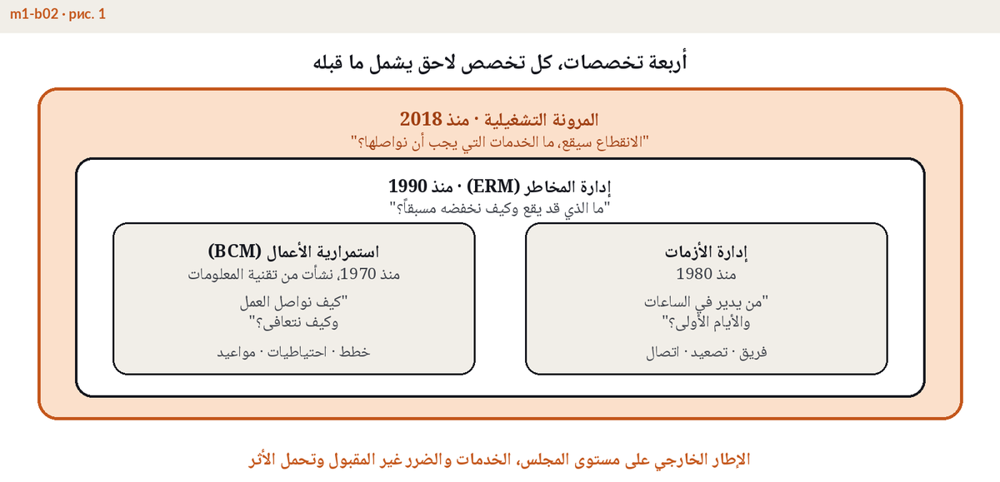

حين يتوقف نظام المدفوعات في مصرف أو غرفة التحكم في منشأة صناعية يوما كاملا، يقع الضرر على ما يحمله المجلس أمانة بين يديه، أي الميزانية العمومية وثقة العملاء ورخصة مزاولة النشاط. وواجب العناية الذي يحمله أعضاء المجالس يمتد بطبيعته إلى كل ضرر يمكن توقعه، وتوقف خدمة حيوية لساعات طويلة أصبح اليوم من أكثر الأضرار قابلية للتوقع. والجهات الرقابية لم تعد تكتفي بالتلميح بل كتبت المجلس في نصوصها بالاسم. فمواد الحوكمة في المواصفة الإماراتية NCEMA 7000 الصادرة عن الهيئة الوطنية لإدارة الطوارئ والأزمات والكوارث تضع مسؤولية برنامج استمرارية الأعمال على الإدارة العليا وتلزمها باعتماد السياسة ومراجعة النتائج، ومصرف الإمارات العربية المتحدة المركزي يتوقع من مجالس المؤسسات المرخصة أن تملك مخاطر التشغيل والاستمرارية لا أن تكتفي بالاطلاع عليها، ولائحة DORA الأوروبية تحمل الجهاز الإداري، أي المجلس واللجنة التنفيذية، المسؤولية النهائية عن المرونة التشغيلية الرقمية وتصل إلى إلزام الأعضاء شخصيا بتحديث معارفهم. لذلك فإن إحالة المرونة بكاملها إلى إدارة تقنية المعلومات ليست خيارا تنظيميا بريئا، بل ثغرة حوكمة يستطيع المراقب الإشارة إليها برقم المادة.
ثلاثة قرارات لا يصح أن تنزل عن طاولة المجلس.

أسرع طريق ليفشل المجلس في المرونة أن يحاول إدارتها بنفسه. فالمجلس لا يكتب خطط الاستمرارية ولا يصمم السيناريوهات ولا يدير تمارين المحاكاة ولا يختار أنظمة التعافي، فهذه كلها من عمل الإدارة التنفيذية وبرنامجها. للمجلس فعلان اثنان. أن يوجه، فيعتمد الشهية ويعين المسؤول التنفيذي ويطلب تقويما سنويا للتمارين ومراجعة دورية للبرنامج. وأن يتحقق، فيقرأ التقارير ويسائل النتائج ويكلف جهة مستقلة بأعمال الضمان ويعود إلى الموضوع بعد كل حادث لا في الموعد المجدول وحده. والفرق عملي لا شكلي، فالمجلس الذي يحرر الخطط بنفسه جعل نفسه جزءا من الخط الأول، ولم يعد هناك من يراجع عمله.

الإشراف يمارس بالأسئلة. هذه السبعة لا تحتاج إلى مفردات تقنية، والإجابة المراوغة عن أي منها ملاحظة بحد ذاتها.
وما يعود إلى المجلس لا يقل أهمية عما يسأل عنه. شكل تقرير المرونة الجاهز لقاعة المجلس ومقاييسه، صفحة واحدة تعرض حدود التحمل مقابل نتائج الاختبار والملاحظات وأعمارها، نتناوله في صفحة مستقلة عن تقارير المرونة التشغيلية لمجالس الإدارة. ولمن يريد من أعضاء المجالس والتنفيذيين البنية الكاملة لحوكمة المرونة، من الشهية إلى المساءلة إلى الضمان، فإن الوحدة الأولى من برنامج ERGP مكرسة لحوكمة المرونة ودور مجلس الإدارة فيها.
صورة حية واحدة للمرونة لمجلس الإدارة ولجنة التدقيق، مؤشر واحد وتكلفة يوم التوقف وأهداف التعافي مقابل الواقع، تتغذى بأرقامكم أنتم.
اكتشفوا اللوحة ←